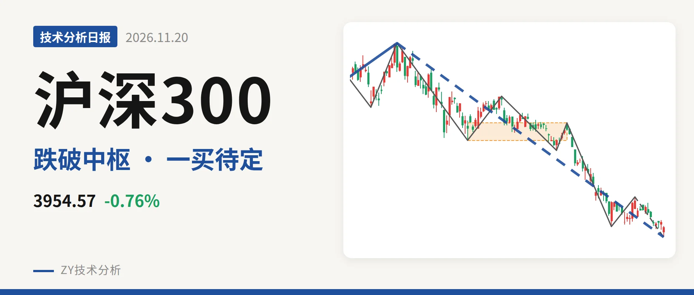
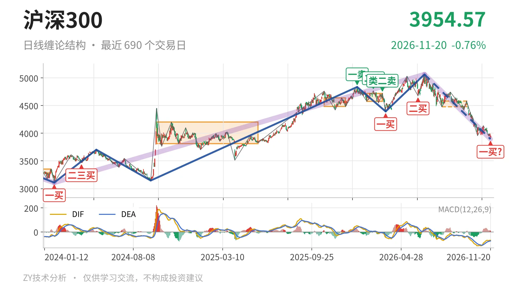
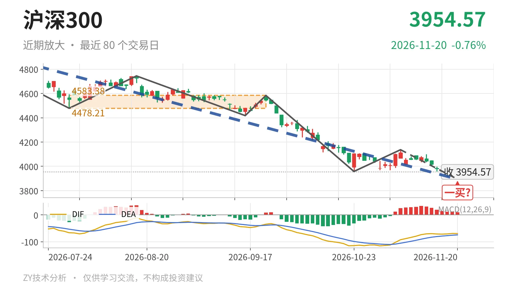

沪深300｜新低3894点，一买暂定

最近日线中枢 4478.21—4583.38点，收盘位于中枢之下
一句话：收盘跌破最近日线中枢下沿，11月20日低点为暂定一买
📉 走势结构：仍处6月23日以来的日线下跌段
当前不是中枢震荡，而是6月23日至11月20日的日线下跌线段还在延续。更大级别上，2024年2月2日至2026年6月23日的上涨段涨约63%，尚未走完；6月23日至今的下跌段跌约23%，是这轮上涨段里的回撤。3月24日至6月23日的日线上涨线段已在5064.27点结束，6月23日以来的日线下跌线段未结束，内含7笔。期间7月30日至8月18日的反弹没有改变向下结构，最新DIF仍位于零轴下方。

📍 中枢与位置：跌破最近中枢下沿，中枢下移
最近一个日线笔中枢是7月30日至9月22日的4478.21—4583.38点，该中枢尚未完成。最新收盘3954.57点低于下沿约11.7%，处于向下离开段。与2月3日至3月17日的中枢4578.21—4720.86点相比，最近中枢明显下移，中轴从约4650点降到4531点。价格离中枢下沿较远，该中枢对后续反抽构成结构压力。
🧭 买卖点：11月20日低点只是暂定一买
11月20日低点3894.47点构成暂定的一买（盘整背驰），所在11月5日至11月20日的下跌笔还没有结束，会随这一笔的延续而变化。1月13日的一卖、2月25日的二卖、3月17日的类二卖价格一个比一个低，之后6月23日高点5064.27点创了新高，这三个卖点只对应较小级别。3月24日的一买4394.29点与6月8日的二买4677.57点之后虽走出过上涨笔，但当前下跌线段已经跌破这两个低点，结构低点下移。

📊 背驰：新低不新弱，盘整背驰待完成
最关键的对比是9月22日至10月23日的下跌笔与11月5日至11月20日的下跌笔。前一段跌13.6%，低点3958.14点，绿柱面积494，DIF低点-115.1；当前这段低点3894.47点创新低，跌幅目前为5.9%，但DIF低点-92.5高于前值，绿柱面积尚未有效释放，数值为0。这是新低不新弱，构成一次盘整背驰。因为当前下跌笔还在延续，面积尚未定型，所以背驰只能支撑暂定的一买，不能当作已走完的背驰段。
🔍 关键位置观察：反抽看4478点，结构偏弱
当前价格已经离开最近中枢，上方最近的结构参考是4478点附近。反抽若回不到4478点上方，结构上构成三卖；重新站上4478点，则向下离开失败，下跌更可能只是中枢扩展。下方看3894点一线，如果后续再度刷新该低点，则11月20日的暂定一买被破坏，下跌段继续。整体结构偏弱，弱在日线下跌线段未结束，且收盘位于最近中枢下方较远。
⚠️ 本文为基于公开行情数据的缠论技术结构记录，由程序自动计算并生成，仅供学习交流，不构成任何投资建议。市场有风险，投资需谨慎。